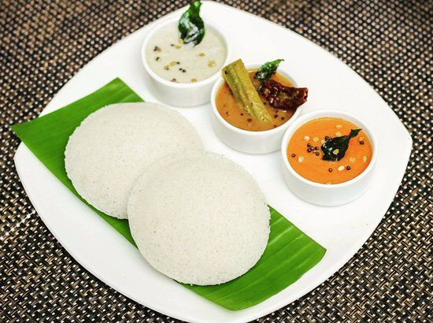
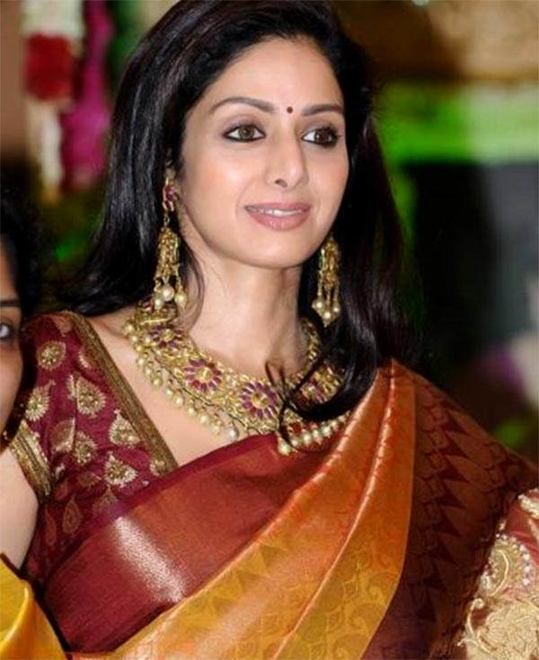

Paris (English: /ˈpærɪs/; French pronunciation: [paʁi] (listen)) is the capital and most populous city of
France, with an official estimated population of 2,102,650 residents as of 1 January 2023[2] in an area of
more than 105 km2 (41 sq mi),[5] making it the fourth-most populated city in the European Union as well as
the 30th most densely populated city in the world in 2022.[6] Since the 17th century, Paris has been one of
the world's major centres of finance, diplomacy, commerce, culture, fashion, gastronomy and many areas. For
its leading role in the arts and sciences, as well as its early and extensive system of street lighting, in
the 19th century, it became known as "the City of Light".
FAVOURITE FOOD : IDLY

Idli or idly (/ɪdliː/ (listen)) (plural: idlis) is a type of savoury rice cake, originating from South
India,
popular as a breakfast food in Southern India and in Sri Lanka. The cakes are made by steaming a batter
consisting of fermented black lentils (de-husked) and rice. The fermentation process breaks down the
starches so
that they are more readily metabolised by the body.
Idli has several variations, including rava idli, which is made from semolina. Regional variants include
sanna
of Konkan.
FAVOURITE HERO : DR APJ ABDUL KALAM
Avul Pakir Jainulabdeen Abdul Kalam BR (/ˈɑːbdəl kəˈlɑːm/ (listen); 15 October 1931 – 27 July 2015) was an
Indian aerospace scientist and statesman who served as the 11th president of India from 2002 to 2007. He was
born and raised in Rameswaram, Tamil Nadu and studied physics and aerospace engineering. He spent the next
four decades as a scientist and science administrator, mainly at the Defence Research and Development
Organisation (DRDO) and Indian Space Research Organisation (ISRO) and was intimately involved in India's
civilian space programme and military missile development efforts.[1] He thus came to be known as the
Missile Man of India for his work on the development of ballistic missile and launch vehicle
technology.[2][3][4] He also played a pivotal organisational, technical, and political role in India's
Pokhran-II nuclear tests in 1998, the first since the original nuclear test by India in 1974.
FAVOURITE HEROINE : SRIDEVI

Shree Amma Yanger Ayyappan (13 August 1963 – 24 February 2018), known professionally as Sridevi, was an
Indian actress who worked in Telugu, Tamil, Hindi, Malayalam, and Kannada language films.[10][11] Cited as
the "First Female Superstar" of Indian cinema,[10][11] she was the recipient of various accolades, including
the National Film Award, The Kerala State Film Award, the Nandi Award, the Tamil Nadu State Film Award, four
Filmfare Awards, including a Filmfare Lifetime Achievement Award and three Filmfare Awards South.[12]
Sridevi's career in Indian cinema spanned over 50 years in a range of genres from slapstick comedy to epic
dramas. She was known for her reticent and introverted personality, but headstrong and outspoken screen
persona, regularly playing strong-willed, sophisticated women.[13][14] In 2013, Sridevi was honoured with
the Padma Shri, the country's fourth highest civilian honour.[9] She was also voted 'India's Greatest
Actress in 100 Years' in a CNN-IBN national poll conducted in 2013 on the occasion of the centenary of
Indian cinema.[15]
FAVOURITE ACTOR : PRABHAS
Uppalapati Venkata Suryanarayana Prabhas Raju (born 23 October 1979), known mononymously as Prabhas
([pɾabʱaːs]), is an Indian actor who predominantly works in Telugu cinema. One of the highest-paid
actors in
Indian cinema, Prabhas has featured in Forbes India's Celebrity 100 list three times since 2015 based on
his income and popularity. He has received seven Filmfare Awards South nominations and is a
recipient of a Nandi Award and a SIIMA Award.
FAVOURITE ACTRESS : ANUSHKA SHETTY
Sweety Shetty (born 7 November 1981), known by her stage name Anushka Shetty, is an Indian actress and model
who predominantly works in Telugu and Tamil films. She is the recipient of three Filmfare Awards South,
two Nandi Awards, two SIIMA Awards and one Tamil Nadu State Film Award. Having appeared in 47 films, she is
one of the highest-paid South Indian actresses and is popularly referred as the "Superstar" of South
Indian cinema.